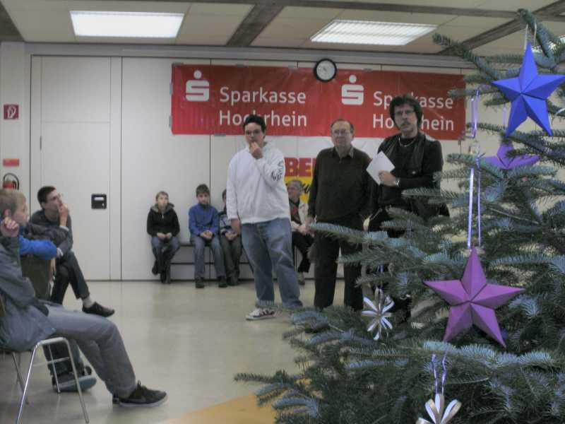
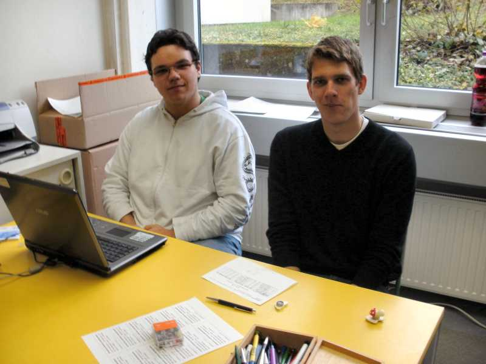
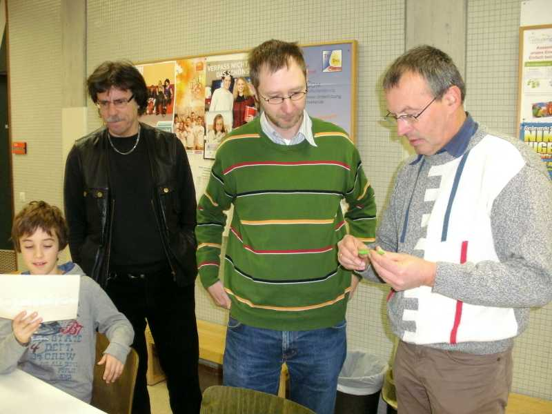
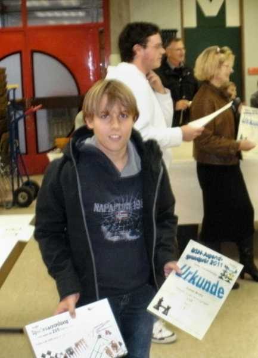

Begrüßung in der Hans-Thoma-Schule durch die Turnierleiter Wolfgang Scheina und Jochen Bahner

Endlich beginnen die Partien bei unseren jüngsten...

und auch die etwas älteren Teilnehmer in der U12 durften anfangen.

Jochen und Rafael können sich also erst mal ausruhen,

während Wolfgang, Jens und Benno mitten im Geschehen waren.

Nach getaner Arbeit durften sich alle bei der Siegerehrung über eine Urkunde und einen Sachpreis freuen.

Besonders freute sich Julian Brotz über seinen ersten Platz.

Frau Möltgen überbrachte Grußworte der Stadt.

Die Sieger der Altersgruppen.
Von links nach rechts Kevin Harass U8 (FR-Zähringen), Lars Nägelin U10 (SG Riehen),
Julian Brotz U12 (SC Laufenburg), Christopher Weh U14 (SK Engen),
Daniel Bahner U16 (SC Laufenburg) und Nicolas Mesot U18 (SC Laufenburg)